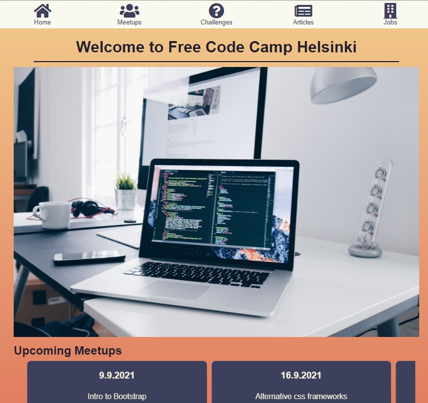

Name: Adam Walton
Introduction: What is the essential story being told by your site and what type of structure did you choose to implement.
My website is meant as a newsletter and homepage for the group Free Code
Camp Helsinki (FCC Helsinki). It’s a local group that meets together
regularly to teach people how to code for free. It has only existed for
a couple years, but they have already had several of their members with
no coding experience get good junior developer jobs.
The site
includes a home page, a page with articles about coding topics, a page
with a weekly coding challenge, a page listing upcoming and previous
meetups, and a page for job searching.
As per the
requirements, my html pages are all on the top level of the tree and
none of them are children of the main page. I also have folders for
scripts, project materials (which only contains attributions right now),
source (src), and stylesheets.
State 3 things that have inspired you when creating your website. These could include guest speakers, other websites, artists, developers etc.
State 3 ways in which your site is accessible.
State 3 ways in which you have considered usability in your site.
State 3 things you had to learn/find out by yourself when creating your site, and describe how you did that (i.e. what searches you did, any new tools/techniques you learned, any changes/adaptations you made to a particular resource to make it work with your site).
In general, my process was similar for learning how to do new things. I would search online using various keywords, and try to find an example where they do something similar. I also found it useful to add new code one line at a time and use console.log to see what the effect was.
What aspect(s) of your work do you think worked well and why?
I’m pleased that I was able to get a real rss feed from a site and parse it to display the results. I went through several different solutions, and I’m very happy with how that ended up. I also feel like I was able to use handlebars.js effectively to build the website and simplify the html. It is very satisfying to create the objects in js and see them created as functional html.
What aspect(s) of your work could be improved, and how might you do things differently another time?
In parsing the rss feed, I did something weird so that there is some html that it reads as a string and not as actual html. I think I could fix that bug with a little more time, but it might require doing some more substantial refactoring and re-thinking. I’m also not thrilled with how the website looks. I feel like the design process was challenging for me to create something that looks good. It’s definitely functional, but I would have benefited from consulting someone with more design sense and experience.
What resources were used when creating your work? You should list here any sources of information, libraries, plug-ins or other code that you used to create your site. You should also reference any code you've used by inserting comments at the start of the scripts.
The photos used in this website were downloaded from Unsplash:
C. Gower, ‘Laptop with code’, 2017[Online]. Available: https://unsplash.com/photos/m_HRfLhgABo [Accessed 16- Aug- 2021].
Color Palette designed using coolors.co
F. Bianchi, ‘Create a palette - Coolers’, Unknown[Online]. Available: https://coolors.co/f4f1de-e07a5f-3d405b-81b29a-f2cc8f [Accessed 15- Aug- 2021].
Horizontal scrolling info:
D. Vinther, 'Creating horizontal scrolling containers the right was [CSS Grid]', 2018[Online]. Available: https://uxdesign.cc/creating-horizontal-scrolling-containers-the-right-way-css-grid-c256f64fc585
[Accessed 24- Aug- 2021].
D. Ionut, ‘Horizontal Click and Drag Scrolling with JS’, Unknown[Online]. Available: https://codepen.io/thenutz/pen/VwYeYEE [Accessed 25- Aug- 2021].
I referred regularly to the codecademy handlebars cheatsheet
Codecademy.com, ‘Templating with Handlebars cheatsheet’, 2021[Online]. Available: https://www.codecademy.com/learn/learn-handlebars/modules/templating-with-handlebars/cheatsheet [Accessed 20- Aug- 2021].
The coding problem is heavily based on this one from leetcode.
Leetcode.com, ‘Removing duplicates from a sorted list’, Unknown[Online]. Available: https://leetcode.com/problems/remove-duplicates-from-sorted-list/ [Accessed 01- Sept-2021].
Accordion for hints based on:
W3schools.com, ‘How TO - Collapsibles/Accordion’, 2021[Online]. Available: https://www.w3schools.com/howto/howto_js_accordion.asp [Accessed 05- Sept- 2021].
The articles for the site were generated by AI. I wrote the first sentence or two and fed them into a text generator to get the word salad you can read on this site.
Deepai.org, ‘Text Generation API’, 2019[Online]. Available: https://deepai.org/machine-learning-model/text-generator [Accessed 09- Sept- 2021].
I used this site to learn how to pull and render an rss feed on my site
C. Coyier, ‘How to Fetch and Parse RSS feeds in JavaScript’, 2020[Online]. Available: https://css-tricks.com/how-to-fetch-and-parse-rss-feeds-in-javascript/ [Accessed 10- Sept- 2021].
Appendices: Site Map, Wireframes and Mockups
Mobile Wireframes
Desktop Wireframes
Mockups
Home Page
Meetups
Challenges
Articles
Jobs